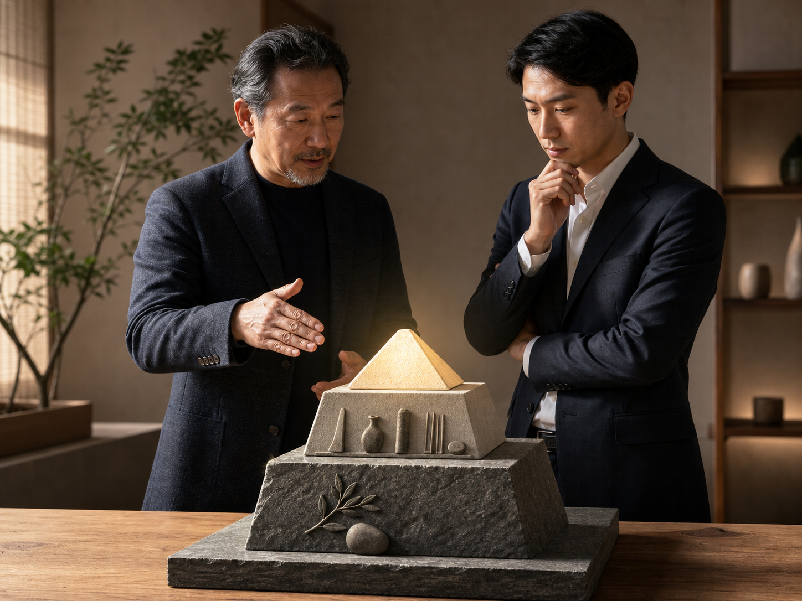

子曰：「不患人之不己知，患其不能也。」
子曰：「驥不稱其力，稱其德也。」
「不患人之不己知」這句話，在《論語》裡出現過好幾次。
孔子也說過：「不患莫己知，求為可知也。」
以及：「不患人之不己知，患不知人也。」
把這幾句話合起來看，其實孔子一直在提醒我們：
不要一直擔心別人不知道你的價值。
真正要擔心的是，你有沒有把自己鍛鍊到值得被看見。
不要只問：「為什麼別人不懂我？」
更要問：「我有沒有真的值得被懂？」
在銷售上，也是同樣的道理。
不要一直想：「為什麼客人不跟我買？」
更要回頭問：「客人為什麼要跟我買？」
我們真正該思考的是：
我懂不懂客人在想什麼？
我知不知道客人真正擔心什麼？
我有沒有能力為客人多做一點？
我提供的價值，夠不夠讓客人願意相信我？
這才是正確的方向。
孔子又說：「驥不稱其力，稱其德也。」
真正值得稱讚的千里馬，不是牠力氣有多大，而是牠有沒有能走長路的德性。

這裡的德性，不只是道德感。
更是堅毅、韌性、穩定，以及堅持到底的能力。
放在人身上，也是如此。
我們不要只稱讚一個人很有才華、很聰明、很會做生意，或者有很好的商業模式。
真正要看的是：這個人的德性好不好。
一個人的金字塔，可以分成三層：
最底層，是德性。
中間，是能力。
最上層，是結果。
核心就在於：
你的德性，撐不撐得起你的能力；
而你的能力，能不能做得出你的結果。
如果德性不夠，能力越強，反而越危險。
如果能力不夠，結果再漂亮，也很難長久。
所以真正值得信任的人，不只是有結果的人，而是德性、能力、結果能夠一致的人。
因為能力不好的人，最多讓你少賺一點、慢一點、辛苦一點。
但德性不好的人，可能會把你帶進萬丈深淵。
嚴重的時候，甚至讓人家破人亡、妻離子散，再也難以翻身。
德性不好的人，也更容易為了賺快錢，走向賭博、毒品，或其他不能回頭的路。
能力不足，可以訓練。
但德性不正，要改就難得多。
所以孔子才會提醒我們：
我們當然都希望遇到德才兼備的人。
但如果兩者不能兼得，先選德性。
因為才華決定一個人能走多快。
德性決定一個人會不會走偏。
「不要只看一個人的能力，要看他的德性，能不能撐住他的能力。」
你的業績卡住了嗎？
我也走過那段「心累」的路，所以我懂那種明明很努力，卻一直卡在同一關的感覺。
如果你想知道：
你的「業務原廠設定」，適合主動開發，還是穩定經營？
你真正卡住的地方，是「開發」、「開口」，還是「成交」？
企業團隊想提升成交力，可以怎麼設計內訓？
想學更多，或邀約企業內訓，歡迎到 Instagram 找我：
https://www.instagram.com/eintaixin